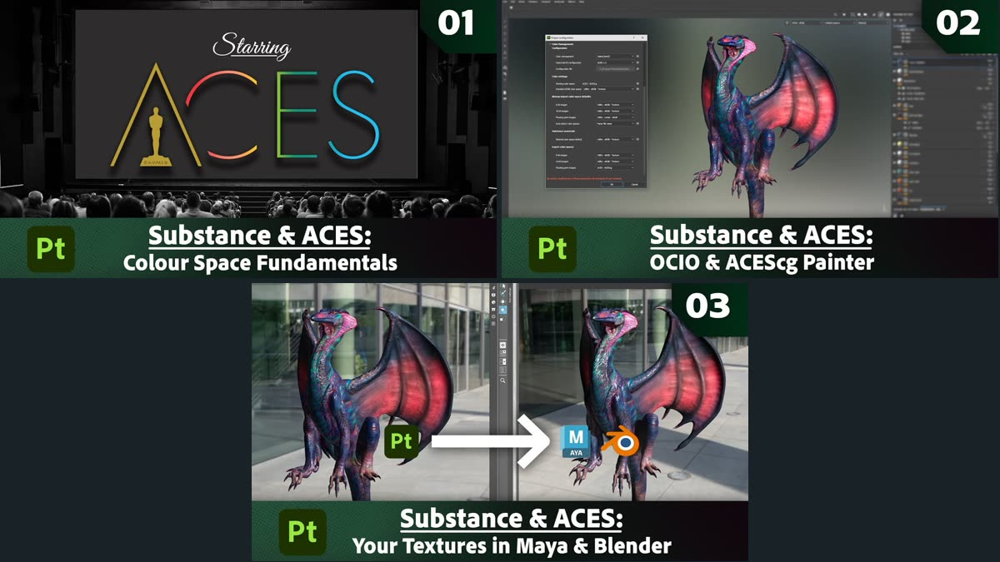
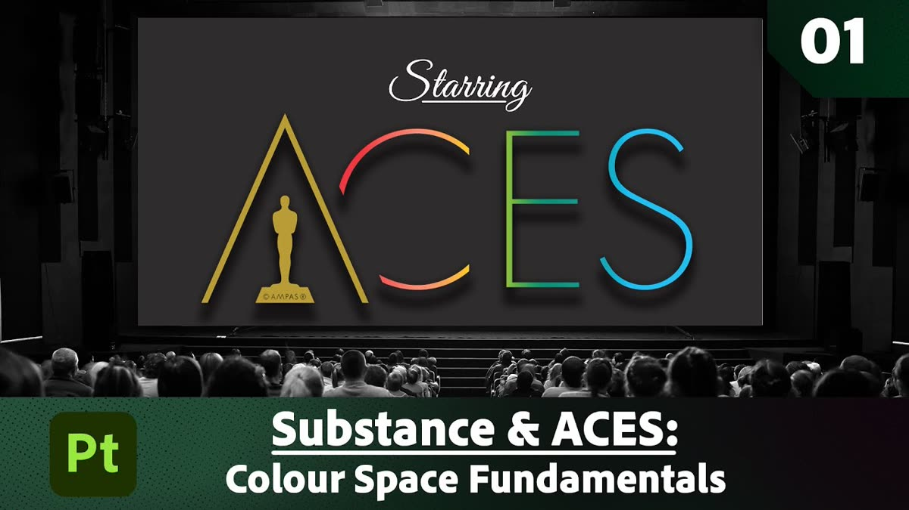
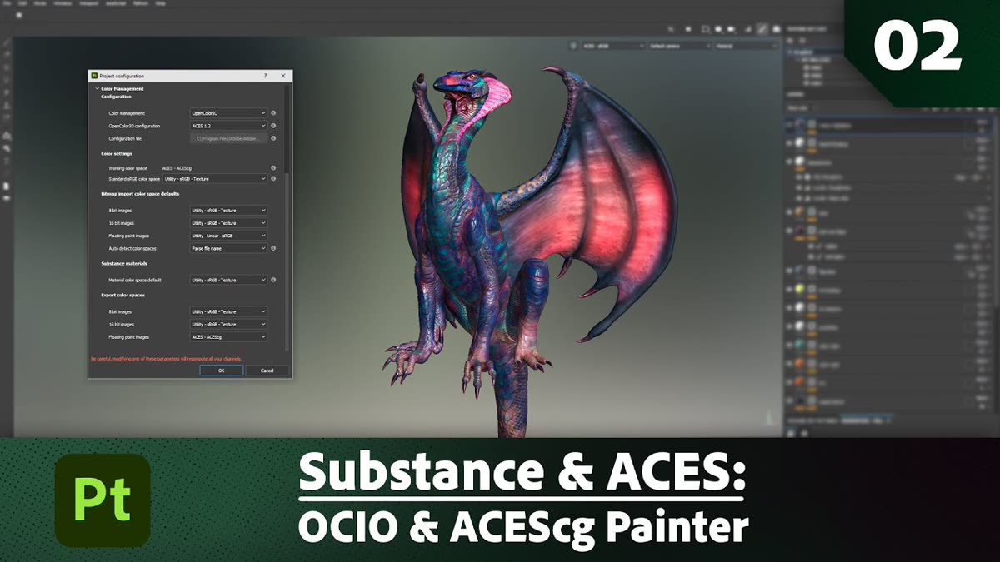
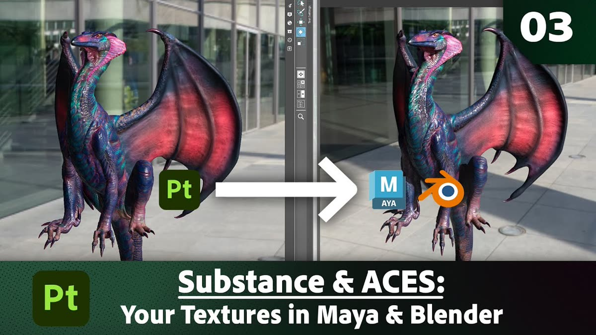

Substance 3D PainterでACESを扱うための公式解説シリーズ。カラースペースの基礎、PainterでのOCIO設定、Maya・Blenderへの受け渡しを3本で扱う。

01 — Color Space Fundamentals（7:04）
https://www.youtube.com/watch?v=hDiYqODGoHg

02 — OCIO & ACEScg in Painter（10:27）
https://www.youtube.com/watch?v=WrFqBNI6Tx4

03 — Textures in Maya and Blender（9:31）
https://www.youtube.com/watch?v=Lksg6Fum3gw